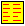

Revised December 2004
The elucidative programming home page and the DOPU page are the primary places to find information about elucidative programming.
The pages shown in this browser are the result of processing a number of programs and a documentation file with the Scheme Elucidator. The main purpose is to present internal program documentation side by side with a number of source programs. The leftmost window shows the documentation, and the rightmost window one of the programs. The topmost window is a menu and index window, from which a number of aspects can be controlled.
Elucidative programming is variant of literate programming, as coined by Knuth in the early eighties. In most literate programming tools (called WEB tools), fragments of programs are defined inside the program documentation. In literate programming, a tool (called tangle) can extract and assemble the program fragments according to the rules of the programming language. Another tool (called weave) formats the documentation, generates indexes, and presents all of it in a nice-looking format.
The main characteristics of Elucidative Programming in relation to Literate Programming are:
A documentation bundle consist of a single documentation file, a number of program files, and a setup file. The documentation file can be written in Scheme with LAML (using a mirror of a particular XML language for elucidative programming). In case the documentation is written in Scheme, the setup and the documentation are written in the same file. Alternatively, the documentation can be written in simple, separate textual format, which allows the use of native HTML tags for formatting. As mentioned above, there are no special requirements to the program files. The setup file is an XML-in-LAML Scheme file, which describes the the constituents of the documentation bundle together with a number of processing parameters. Running the setup file through a Scheme processor generates the HTML pages shown in this browser.
The icons in the menu and index frame (at the top) are now described:
| Icon | Explanation |
| Reset the elucidator to vertical layout (the default layout). All frames are reverted to the 'start position'. |
| Reset the elucidator to a horizontal layout. This is an alternative layout in which the documentation and a selected program are shown under each other, in full width |
|  | Presents an index of all defined names in the menu and index frame, just below the icons at the top of the window. The index is pr. default broken into fragments according to starting letter of the defined name. |
| Presents a cross reference index in the menu and index frame. A cross reference index relates all applied names to the definition, in which they occur. The index is pr. default broken into fragments according to starting letter of the applied name. |
| Present an index of all named defined more than once in the documentation bundle. This is useful information in a Lisp program |
| Present an overall table of contents for the documentation in the menu and index frame. This table of contents only covers the top-level section, but no subsections. |
| Present a table of contents for the documentation in the menu and index frame. This table of contents convers both top-level sections and subsections (also called entries). |
| Present this Elucidator help page in the documentation frame to the left | |
| Present this Elucidator help page in the program frame to the right |
The menu in the upper rightmost frame lists all source programs in the current documentation bundle. If you select an item in the menu, the selected program will be shown in the program frame. It is possible to switch between showing program source files and SchemeDoc manual files.
From the documentation frame (the large to the left) it is possible to adjust the program window, such that a given piece of program is shown. Similarly, from the program frame (the large frame to the right), the yellow left arrows  can be used to find the section in the documentation, which explains the particular program unit. The light yellow arrows
can be used to find the section in the documentation, which explains the particular program unit. The light yellow arrows  refer to a documentation section which mentions the definition (as opposed to explaining it). We talk about strong and weak relations between the documentation and the program resp. Besides these means of navigation it is possible to navigate inside the documentation frame (from section to section), and inside the program frames (from applied name to the similar definitions, as well as to cross reference indexes).
refer to a documentation section which mentions the definition (as opposed to explaining it). We talk about strong and weak relations between the documentation and the program resp. Besides these means of navigation it is possible to navigate inside the documentation frame (from section to section), and inside the program frames (from applied name to the similar definitions, as well as to cross reference indexes).
Inside the program and inside documentation sections you may find small color bullets like  . These are called source markers. The source markers are used to point out a particular place in a piece of program, which is discussed in a documentation section. You can click on a source marker in the documentation in order to navigate to the corresponding source marker in the program. Also navigation in the opposite direction is supported from most source markers. The popup text, which appears in most browsers when the cursor rests on a source marker, gives useful additional information about the source marker. Notice that a source marker in the documentation is associated with the closest preceding strong documentation-program relation.
. These are called source markers. The source markers are used to point out a particular place in a piece of program, which is discussed in a documentation section. You can click on a source marker in the documentation in order to navigate to the corresponding source marker in the program. Also navigation in the opposite direction is supported from most source markers. The popup text, which appears in most browsers when the cursor rests on a source marker, gives useful additional information about the source marker. Notice that a source marker in the documentation is associated with the closest preceding strong documentation-program relation.
This instance of the Scheme Elucidator has 8 different links to SchemeDoc manuals. You find these in the upper right corner, possibly by pressing "Show Manual Menu". The links to SchemeDoc manuals are dark green in the default CSS stylesheet.
This Elucidator provides links the R5RS Scheme manual. Links to syntax items are anchored in black bold words. Links to standard procedures are dark brown in the default CSS stylesheet.
The source programs are, by default, shown using a fairly small font size. The small square symbols  can be used to toggle the program frames to use larger font. Notice that the small square symbol is only shown in certain configurations (when the variable make-large-source-files? is true or in the case that variable default-program-font-size is set to large)
can be used to toggle the program frames to use larger font. Notice that the small square symbol is only shown in certain configurations (when the variable make-large-source-files? is true or in the case that variable default-program-font-size is set to large)
The icon  is an anchor of a link from a definition to an entry in the cross reference index. This link is very convenient because it allows us to follow call chains via the cross reference index: Go from a definition of N to the cross reference entry N. Find via that entry a function F which calls N; Go the cross reference entry of F, and find a function G which calls F, etc.
is an anchor of a link from a definition to an entry in the cross reference index. This link is very convenient because it allows us to follow call chains via the cross reference index: Go from a definition of N to the cross reference entry N. Find via that entry a function F which calls N; Go the cross reference entry of F, and find a function G which calls F, etc.
Many details of the presentation, such as colors, can be controlled via CSS stylesheets. You may have a stylesheets directory in the directory with the LAML setup file. Within this directory two files, program.css and documentation.css, affect the presentation details. Your own program.css and documentation.css files are appended to the systems CSS files, thereby overruling the systems presentation preferences. You should take a look at the CSS stylesheets that come with the Scheme Elucidator. They are located in styles/xml-in-laml/elucidator/stylesheets/ relative to you laml directory.
The Scheme Elucidator can handle a program source files in several different versions. The grey arrows,  and
and  , shown in the program frame, allow navigation from one version to another. In the documentation, links shown on a grey background, go to older versions of the program. - When versions are handled, the icons
, shown in the program frame, allow navigation from one version to another. In the documentation, links shown on a grey background, go to older versions of the program. - When versions are handled, the icons  ,
,  ,
,  ,
,  , and
, and  are used to signal a new definition in this version, an existing but updated definition in this version, a definition renamed from relative to a similar defintion in an older version, an identical definition moved from another source file, and a definition which does not appear in the next version, repectively. - The icons
are used to signal a new definition in this version, an existing but updated definition in this version, a definition renamed from relative to a similar defintion in an older version, an identical definition moved from another source file, and a definition which does not appear in the next version, repectively. - The icons  and
and  are used to refer to documention, in which we have asked for specific versions of a program unit. Thus, these icons refer to documentation of specif versions of the software.
are used to refer to documention, in which we have asked for specific versions of a program unit. Thus, these icons refer to documentation of specif versions of the software.
The elucidator is written in Scheme, using the LAML software package.
You can use the browser's back button to establish the original contents of this frame, or you can activate the reset elucidator icon in the top left corner to return to the standard layout.
Kurt NÅ√Å∏rmark
Aalborg University
normark@cs.auc.dk
http://www.cs.aau.dk/~normark/